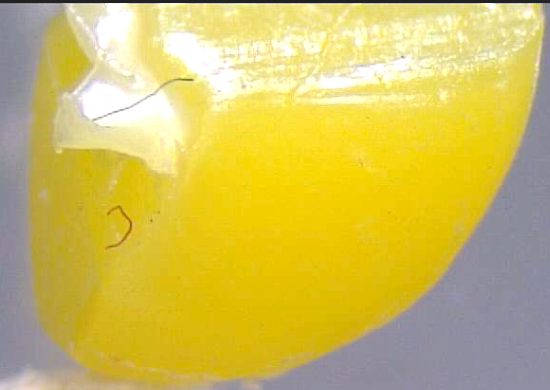
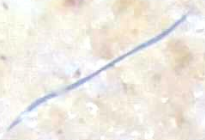
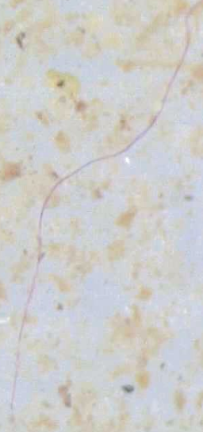
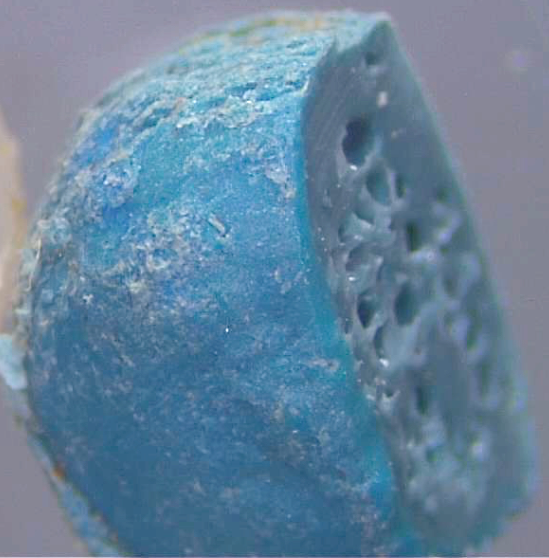
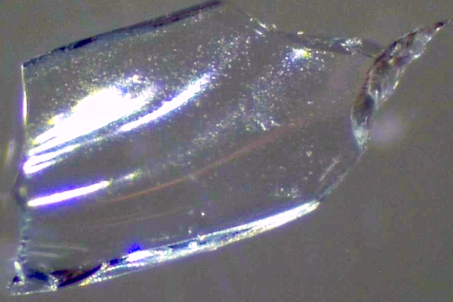
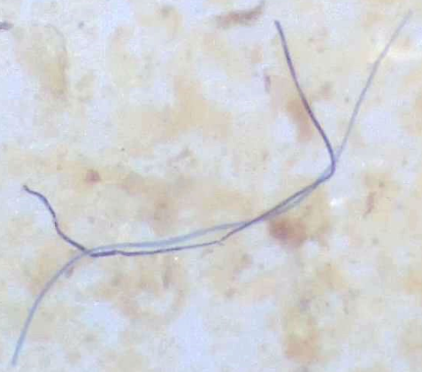
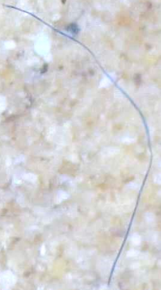
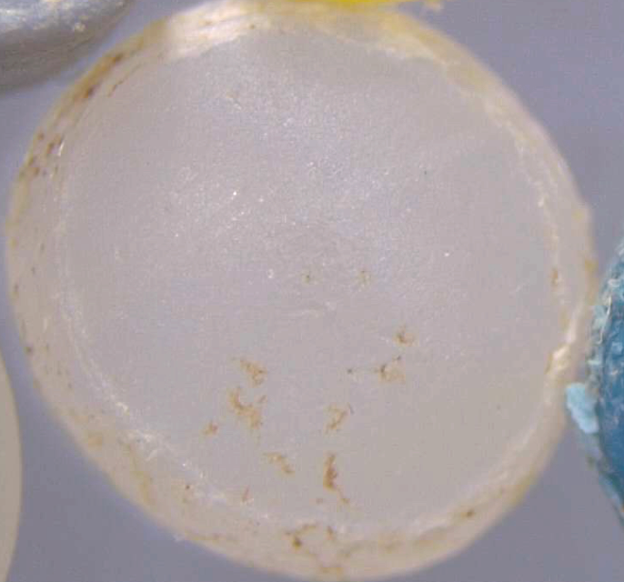
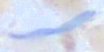

AI Microplastics Detection System
Suthi de Silva, Dr. Rachel Headley, College of Idaho
A specialized image detection program that uses TensorFlow for identifying and classifying microplastics in water samples from the Boise River Basin. This project utilizes transfer learning with Google's Inception model to classify different types of microplastics including fibers, beads, films, foam, and fragments.
Upload an image to analyze microplastic content
Try one of our samples:









OR drag and drop image here or click to upload
Supported Keywords
Beads
bead, beads, sphere, spherical
Fibers
fiber, fibers, fibre, fibres, thread, threads
Films
film, films, sheet, sheets
Foam
foam, foams, polystyrene
Fragments
fragment, fragments, piece, pieces
Organic
organic, natural, plant, algae
Analysis Results
Beads
0%Fibers
0%Films
0%Foam
0%Fragments
0%Organic Matter
0%Undefined
0%